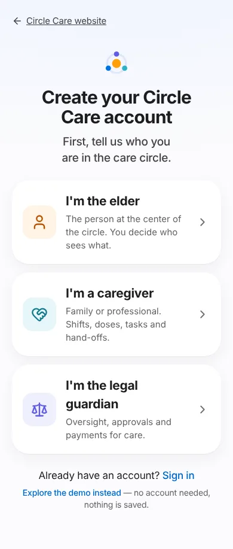
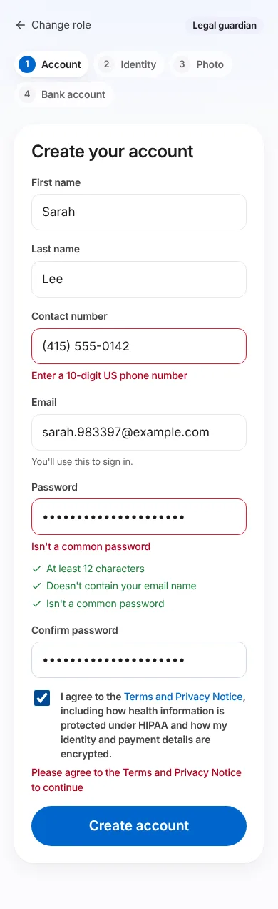
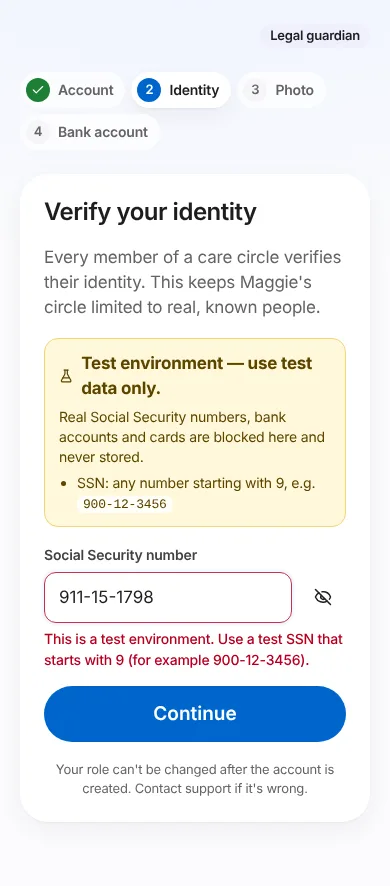
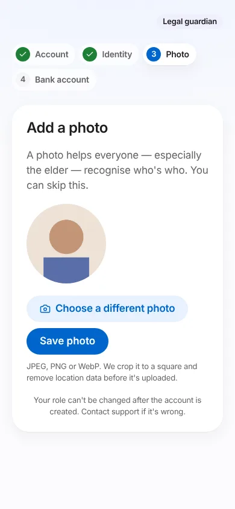
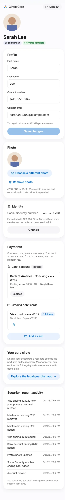
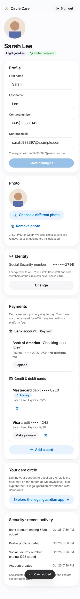
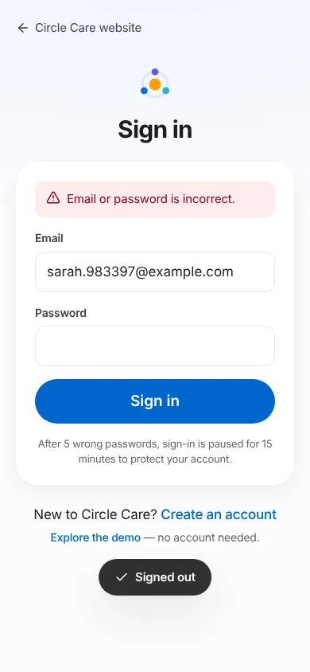

Accounts, identity & payments¶
Overview¶
What. Circle Care now has real accounts. Anyone can open the website, pick who they are in the care circle — the elder, a caregiver or the legal guardian — create an account, and complete a profile: name, contact number, email, a photo and their Social Security number. The legal guardian also adds the bank account used to pay for care by ACH (no platform fee) and can add credit or debit cards, one of them primary. Everything is stored on the server in PostgreSQL, with elders, caregivers and guardians in separate tables.
Why. The earlier prototype switched between demo people and kept everything in the browser. A real care product needs real, verified people, and the guardian needs a way to pay. Because that means holding Social Security numbers and bank details, the feature is built around protecting them: encrypted, never shown in full, never present in test environments, and masked for audits.
Business value.
- Turns the demo into a working product foundation that every roadmap epic builds on.
- Identity verification keeps care circles limited to known people, which families and agencies expect.
- No-fee ACH plus card payments prepares for paid care and subscriptions (Release 4–5).
- Field-level encryption, tokenized payments and masked audit exports make HIPAA, GLBA, PCI DSS and FDIC/legal audit requests answerable.
The demo is still there
Explore the demo keeps working exactly as before, with fictional people stored only in the browser. Real accounts and the demo never mix.
User journey¶
1. Choose your role (CC-172)¶
From Get started in the site header, or Create an account on /app, the person sees three large choices: I'm the elder, I'm a caregiver, I'm the legal guardian. Each says in one line what that role does. Sign in and Explore the demo instead are on the same screen.

The next screens show the role badge and a step indicator: Account → Identity → Photo for the elder and caregivers, plus Bank account for the legal guardian. Change role goes back to the picker and keeps the name, phone and email already typed.
2. Create the account (CC-173)¶
First name, last name, contact number, email, password and confirmation, plus agreement to the Terms and Privacy Notice. A live checklist shows the password rules as they're met. Mistakes are explained next to the field, and focus moves to the first one.

3. Verify identity (CC-180, CC-182)¶
The person enters their Social Security number. It's hidden as they type (with a show/hide button) and formatted as ###-##-####. In test environments a yellow banner explains that only test numbers starting with 9 are accepted.

4. Add a photo (CC-179)¶
Choose a JPEG, PNG or WebP photo. It's cropped to a square, resized to 512 × 512 and re-encoded on the phone, which removes location and camera data before anything is uploaded. Skip for now is allowed.

5. Bank account — legal guardian only (CC-186)¶
Bank name, name on the account, checking or savings, routing number, account number and confirmation. The numbers go to the payment vault, which returns a token; Circle Care keeps only the bank name, type and last four digits. The guardian can't finish sign-up without it.
6. My account (CC-176 – CC-188)¶
Photo, name, role and Profile complete (or a list of what's missing). Sections: Profile (edit name, phone, contact email), Photo (change or remove), Identity (SSN shown as •••-••-1234; changing it needs the password), Payments for the guardian (bank account, cards, add card, make primary, remove), Your care circle (open the role's app with demo data), and Security · recent activity.


7. Sign in (CC-174, CC-175)¶
Email and password. A wrong password and an unknown email give the same message. After five wrong passwords in 15 minutes, sign-in is paused for 15 minutes.

Functional details & business rules¶
Account and profile¶
| Field | Rule | Message when wrong |
|---|---|---|
| First / last name | 1–50 letters, spaces, apostrophes, periods or hyphens | "Use letters, spaces, apostrophes or hyphens" |
| Contact number | 10-digit US number in any format; stored as +1XXXXXXXXXX |
"Enter a 10-digit US phone number" |
| Valid address; trimmed and lower-cased; one account per email | "Enter a valid email address" · duplicate: "We couldn't create an account with these details. If you already have one, sign in." | |
| Password | ≥ 12 characters, not containing the email name, not a common password | Checklist item that isn't met |
| Terms | Must be ticked | "Please agree to the Terms and Privacy Notice to continue" |
- The role is fixed once the account exists. Changing it is a support process.
- Profile complete means: name, phone, email and SSN for everyone, plus a bank account for the legal guardian. Otherwise the API returns
profileStatus: "incomplete"and amissinglist (ssn,bank_account). - The sign-in email and the contact email start the same. The contact email can change in My account, and the sign-in email stays as it was.
Social Security number¶
| Rule | Production | Every other environment (development, test, staging, Replit) |
|---|---|---|
| Must be 9 digits, not all the same, not a known invalid number (e.g. 123-45-6789, 078-05-1120) | ✔ | ✔ |
Group 00 or serial 0000 |
Rejected | Rejected |
Area 000, 666 |
Rejected | Rejected |
Area 900–999 |
Rejected (never issued as SSNs) | Required — the only numbers accepted |
9XX with middle digits 50–65, 70–88, 90–92 or 94–99 |
Rejected | Rejected — the IRS issues these as real ITINs, so test numbers must use middle digits 01–49, 66–69, 89 or 93 |
| Same SSN on two accounts | Rejected: "This number can't be used. Contact support." | Same |
| Changing an existing SSN | Requires the account password | Same |
Payments (legal guardian only)¶
| Item | Rule |
|---|---|
| Bank account | Exactly one, required. Replacing it saves the new one in the same transaction that removes the old, so the guardian is never without one. It can't be removed outright. |
| Routing number | 9 digits passing the ABA checksum. Outside production: only 110000000. |
| Account number | 4–17 digits; must match the confirmation. Outside production: must start with 000. |
| ACH fee | $0 platform fee. Enforced in the database (CHECK (ach_fee_cents = 0)) and shown on screen. |
| Cards | Up to 5. Luhn-checked, brand detected as you type, expiry must be this month or later, 3-digit (4 for Amex) security code, 5-digit ZIP. |
| Primary card | The first card becomes primary. A new card can be made primary. Removing the primary card promotes the most recently added remaining card, and the app says which. Exactly one primary is enforced by a unique index. |
| Test cards (outside production) | Visa 4242 4242 4242 4242 · Visa debit 4000 0566 5566 5556 · Mastercard 5555 5555 5555 4444 · Mastercard debit 5200 8282 8282 8210 · Amex 3782 822463 10005 · Discover 6011 1111 1111 1117 |
| Vault tokens | Belong to the person who created them, can be used once, and expire after 15 minutes. Removing a card revokes its token. |
Permissions & privacy¶
| Data | Who can see it | How it's stored |
|---|---|---|
| Name, phone, email | Only the account owner (the care-circle sharing rules still apply to the demo app) | Plain columns in elders, caregivers or guardians |
| SSN | Nobody in full — not the owner, other members or staff. The API returns the last four digits only. | AES-256-GCM ciphertext (ssn_enc), last four (ssn_last4), HMAC fingerprint in ssn_fingerprints for duplicate checks |
| Photo | Only the owner (Cache-Control: private, no-store) |
Encrypted bytes in photos; location data removed on the device |
| Bank account | Owner: bank name, type, last four of account and routing numbers | Vault token + last four. The full number is never stored, even encrypted. |
| Cards | Owner: brand, credit/debit, last four, expiry | Vault token + last four. The full number and security code are never stored. |
| Activity | Owner (last 20 events) | Append-only audit_events with masked details |
- Card numbers never reach the Circle Care API. The browser sends them straight to the vault and the API only receives a token, which keeps Circle Care out of the heaviest PCI DSS scope (SAQ A once Stripe Elements is connected).
- The service worker never caches
/apior/vaultresponses, so personal details aren't left in the browser's offline cache. - Request bodies are never logged. The audit writer refuses any detail that looks like a full SSN, account or card number.
Environments & test data (CC-182, CC-183)¶
APP_ENV |
Use | Accepts real SSN / bank / card? | Database | Keys |
|---|---|---|---|---|
development (default) |
Local and Replit Run | No — test values only | Replit PostgreSQL if DATABASE_URL is set, otherwise embedded Postgres in .data/ |
Generated once into .data/dev-keys.json if not set |
test |
Automated tests | No | In-memory Postgres | Random per run |
staging |
Replit Deploy | No | DATABASE_URL required |
Required (stable across restarts); cookies are Secure |
production |
A real launch, when approved | Yes | DATABASE_URL required |
Required, plus Stripe live key; the simulated vault is disabled |
If anything required is missing in production, the server does not start and lists what's wrong. A live Stripe key is refused outside production. Every non-production screen that collects sensitive data shows the yellow Test environment — use test data only banner with the test values.
Audits: masked export (CC-184)¶
For an FDIC examination, a legal request or an internal audit, an operator runs:
npm run audit:export -- --out ./audit-export --operator "Jane Doe"
# add --full-names only for a legal hold that requires full names
| File | Contents |
|---|---|
people.csv |
Role, name (first name + last initial), email m•••@domain.com, phone (•••) •••-1234, SSN •••-••-1234, created date |
payment_methods.csv |
Bank ••••6789 / routing •••••0000 / fee 0; cards Visa •••• 4242, credit/debit, primary |
audit_events.csv |
Every audit event with masked details |
manifest.json |
Time, environment, operator, masking rules, row counts and a SHA-256 for each file |
The export reads only the masked database views (audit_people_masked, audit_payment_methods_masked). If a file would contain anything that looks like a full number, it refuses to write it. The export itself is recorded as an audit.exported event. An auditor's read-only database role should be granted only these views.
Tip
With the embedded development database, stop npm run dev before running the export, because only one process can open it. With DATABASE_URL this isn't needed.
Data captured¶
| Table | Purpose |
|---|---|
users |
Sign-in email, scrypt password hash, role, lockout counters |
sessions |
SHA-256 of the session token, created / last seen / absolute expiry |
elders, caregivers, guardians |
One row per person, separate per role: names, phone, email, ssn_enc, ssn_last4 |
ssn_fingerprints |
One SSN per person across all three tables |
photos |
Encrypted photo, type, size (≤ 2 MB) |
bank_accounts, payment_cards |
Tokens and display details only (CHECK constraints stop full numbers being stored) |
vault_tokens |
The simulated vault's token register (last four only) |
audit_events |
Append-only trail (a trigger blocks UPDATE and DELETE) |
See Data model and Security & privacy.
API¶
| Method & path | Purpose |
|---|---|
GET /api/health · GET /api/config |
Health check · environment and test values |
POST /api/auth/signup · /signin · /signout · GET /api/auth/me |
Accounts and sessions |
GET/PATCH /api/me |
My profile |
PUT /api/me/ssn |
Set or change SSN (change needs password) |
PUT/GET/DELETE /api/me/photo |
Photo (raw image body, ≤ 2 MB) |
GET /api/me/activity |
Last 20 audit events in plain language |
GET /api/me/payment-methods · POST …/bank-account · POST …/cards · POST …/cards/:id/primary · DELETE …/cards/:id |
Guardian payment methods (tokens only) |
POST /vault/v1/bank-accounts · POST /vault/v1/cards |
Simulated vault (absent in production) |
All requests that change data must send X-Requested-With: circle-care. Together with the SameSite=Strict session cookie, this blocks cross-site requests that change data.
Security controls¶
| Control | Detail |
|---|---|
| Passwords | scrypt (N=16384, r=8, p=1), 16-byte salt, constant-time comparison. Unknown emails are checked against a dummy hash so timing doesn't reveal which accounts exist. |
| Sessions | 32-byte random token in an HttpOnly; SameSite=Strict cookie (Secure in production). Only its SHA-256 is stored. Expires after 30 idle minutes and 12 hours absolute. |
| Lockout | 5 failures in 15 minutes locks the account for 15 minutes. Failures are counted with one atomic database update, so parallel guesses can't slip past the limit. Wrong passwords on the SSN-change step count too; reaching the limit there also signs the account out everywhere. |
| Rate limits | Sign-up 10 per hour and sign-in 30 per 10 minutes per network; vault 30 per 10 minutes per user. |
| Encryption | AES-256-GCM with a key id in every ciphertext (v1.<keyId>.…) for rotation (DATA_ENCRYPTION_KEY_PREVIOUS). Tampered data fails to decrypt. |
| Headers | CSP with frame-ancestors 'none', X-Frame-Options: DENY, nosniff, Referrer-Policy: no-referrer, HSTS in production, Cache-Control: no-store on the API. |
| Uploads | File signature checked (JPEG/PNG/WebP). The Content-Type header isn't trusted. 2 MB limit. |
Accessibility¶
- Every field has a visible label. Errors are linked with
aria-describedby, announced, and focus moves to the first one. - Role choices and all buttons are at least 48 px tall and work by keyboard. The step indicator uses
aria-current="step". - The masked SSN is read as "Social Security number ending in 1 2 3 4".
- All new screens pass the axe WCAG 2.1 AA audit:
/app/join,/app/join/guardian,/app/login,/app/accountwith the card form open. Layouts work at 375 px with no sideways scrolling.
Test coverage¶
| Suite | What it proves |
|---|---|
server/__tests__/api.test.ts (81 tests) |
Every sign-up rule, sessions and expiry, CSRF, lockout, profile isolation, completeness, photo checks, SSN rules per environment, duplicate SSN, re-authentication, tamper detection, bank and card rules, token ownership, use-once and expiry, primary-card rules, append-only audit, schema constraints, and regression tests for every Lead Architect review finding (parallel-guess lockout, SSN step-up lockout, ITIN ranges, bank-name digits, malformed cookie). It also scans every API response in the suite and fails if a full SSN appears. |
server/__tests__/config-and-export.test.ts (14 tests) |
Production and staging start-up checks, live-key guard, Secure cookie, HSTS and vault disabled in production. The masked export's contents, manifest and hashes, and that no full number appears in any file. |
tests/e2e/accounts.py (15 scenarios, Playwright) |
The full guardian journey on a phone-sized screen, elder journey, duplicate email, wrong password, lockout, cards, activity, profile edit. Also checks that the SSN and account number never appear in the page. |
tests/e2e/a11y.py |
axe audit including the four new screens |
Known limitations & production gaps¶
- Payments don't move money yet. The vault is simulated. Production needs the Stripe adapter (Stripe Elements for cards, Financial Connections or micro-deposits to verify bank accounts) and a BAA review. Until then, adding payment methods in a
stripeenvironment returns "not available yet". - Identity is checked for format, not verified with a third party (e.g. an identity-verification provider). That is a follow-up story.
- No MFA, password reset or email verification for real accounts yet. The demo shows the intended MFA design. These are the next stories in the Accounts epic.
- Accounts aren't linked into a shared care circle yet. Explore the … app opens the role's demo experience.
- The embedded database is single-process. Use Replit PostgreSQL (
DATABASE_URL) for anything shared.
Related pages¶
Data model · Security & privacy · Privacy Center · Roadmap · How to contribute